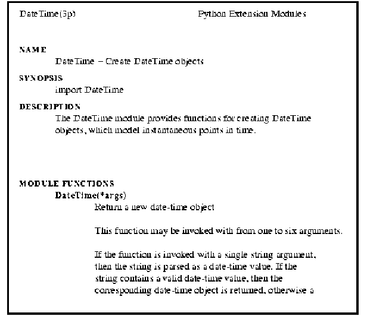
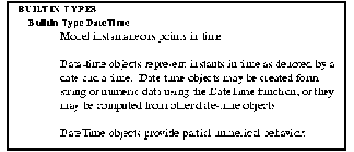
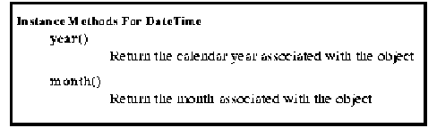

Generating User Documentation
from Doc Strings
Table of Contents
An obvious application of doc strings is the generation
of user documentation in "printed" form and in browsers.
I have been able to (easily) automatically generate user documentation
from doc strings.
Now that we have some experience using doc strings, is there anything that
can be done to make them more useful?
- Reads Python modules and generates manual pages in a variety of formats.
- class or def statements become headings, with doc strings as section bodies.
- Minimal source parsing to get class and function names.
- Some attempt is made to recognize textual attributes from ASCII text.
For example "- spam" becomes: " spam"
- Separate "manual page" for each module function and class.
- Currently just for extension modules
- One "manual page" per module

- Section for module functions
- A section for each built-in type

- Each function or method is a sub-section
- If doc string is of form
"spam(a,b,) -- Description of spam ...", then the subsection heading is
"spam(a,b)" as in the Python library reference.

- Extension modules need to export types
- Need to be able to get at method doc strings without creating instances.
I suggest the creation of a "method list" type. Method list object
pointers could optionally be created by extension modules and a pointer put in
the type object structure.
A standard getattr function should also be provided that uses method lists
objects. Perhaps python could call it automatically.
I would be willing to come up with a first-cut implementation.
Method list object requirements?
- Get ands store method names, function pointers, and doc strings from
existing method-list structure.
- Optionally use a dictionary to speed method lookup for large method
lists.
- Other method information? (e.g. signatures)
- ???
- Organization?
- Format Markup?
- Structure Markup?
- Implicit markup? (e.g. "- spam" -> " spam")
It is critical for doc strings to be readily available in the interpreter,
so if explicit markup is used, then we need to provide standard
formatting tools within the interpreter.
{kind=link}
{kind=link}
{kind=link}